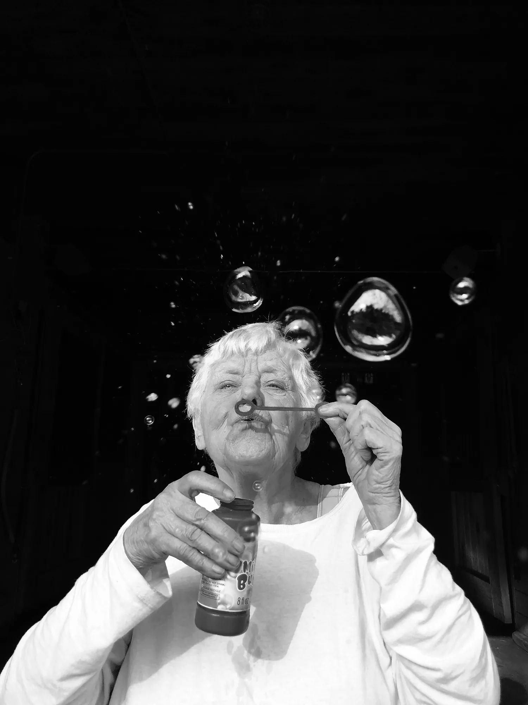
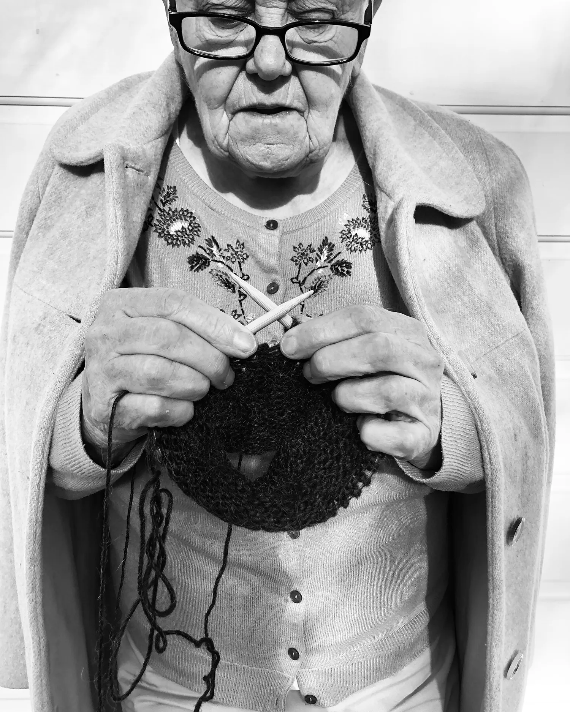

Elderly couple hugging, bonding and spending quality time together at their home. Credit:
PeopleImages
Dementia May Not Always Be the Threat It Is Now.
Here’s Why.
The number of cases will increase, but the rates seem to be declining with every birth cohort
that reaches advanced ages, researchers said.
BY: PAULA SPAN
MARCH 22, 2025
Joan Presky worries about dementia. Her mother lived with Alzheimer’s disease for 14 years, the last
seven in a memory-care residence, and her maternal grandfather developed dementia, too.
“I’m 100 percent convinced that this is in my future,” said Ms. Presky, 70, a retired attorney in
Thornton, Colo.
Last year, she spent almost a full day with a neuropsychologist, undergoing an extensive evaluation. The
results indicated that her short-term memory was fine — which she found “shocking and comforting” — and
that she tested average or above in every cognitive category but one.
She’s not reassured. “I saw what Alzheimer’s was like,” she said of her mother’s long decline. “The
memory of what she went through is profound for me.”
The prospect of dementia, which encompasses Alzheimer’s disease and a number of other cognitive
disorders, so frightens Americans that a recent study projecting steep increases in cases over the next
three decades drew enormous public attention.
The researchers’ findings, published in January in Nature Medicine, even showed up as a joke on the
Weekend Update segment of “Saturday Night Live.”


Dementia is often ugly, stressful, and isolating; for the photographer Cheryle St. Onge, taking pictures
of her mother is a way of expressing happiness, connection, and love. Photographs by Cheryle St. Onge
Dementia is a devastating condition, and it’s very much related to the oldest ages,” said Dr. Josef
Coresh, director of the Optimal Aging Institute at NYU Langone Health and the senior author of the
study. “The globe is getting older.”
Now the findings are being challenged by other dementia researchers who say that while increases are
coming, they will be far smaller than Dr. Coresh and his co-authors predicted.
Using data from about 15,000 Americans over age 55, collected at four research clinics around the
country from 1987 through 2020, Dr. Coresh’s team projected a lifetime dementia risk much higher than
previous studies had: 42 percent, though most of that risk didn’t emerge until after age 85.
The higher lifetime number probably reflected the study’s reliance on a more diverse sample than earlier
researchers had used, Dr. Coresh said, and more dementia cases identified through in-depth
questionnaires, regular phone calls, medical records and death certificates.
The researchers applied their risk calculations to the U.S. population and estimated that the number of
people who would develop dementia each year would roughly double, to about a million by 2060, from
514,000 in 2020.
But when it came to the projection that cases would double, which assumed that the incidence of dementia
would remain stable over the next 40 years, “I don’t believe it,” Mr. Stallard said.
“The notion that the number of people with dementia will double
over the next 25, 30 or 35 years due to the aging of baby boomers is widespread, it’s pervasive —
and it’s wrong.
- Mr. Stallard
He and two other Duke researchers recently published a commentary in JAMA pointing out that the
age-specific prevalence of dementia in this country had steadily declined for 40 years.
“If your risks are lower than your parents’ risks and this trend continues, you won’t see the doubling
or tripling of dementia that’s been projected,” said Dr. Murali Doraiswamy, director of the
Neurocognitive Disorders Program at Duke and a co-author of the JAMA article.
To be clear, experts agree that the number of people with dementia will climb in coming decades, simply
because the disorder rises so steeply with age and the number of older adults in the United States will
increase.
But Mr. Stallard estimates that the increase will be more like 10 to 25 percent by 2050. “It will still
be a significant challenge for the health system in the U.S.,” he said.
The Duke group relied on its own long-term study of people over age 65, with more than 21,000
respondents in 1984 and about 16,000 in 2004, plus later data from the national Health and Retirement
Study and the National Health and Aging Trends Study.
Their analysis found that among 85- to 89-year-olds, for instance, the proportion with dementia was
about 23 percent in the cohort born in 1905. In those born 10 years later, the figure had dropped to
about 18 percent.
By the time Americans born in 1935 reached their late 80s, about 11 percent had dementia; the projection
for those born from 1945 to 1949 is now about 8 percent.
To Dr. Coresh, whose primary interest was in individual risk, the assumption that past declines would
continue at about the current rate “would be great, but is quite an optimistic, dramatic decrease,” he
said in an email.
Yet in another longitudinal study of older adults in England and China, published in Nature Aging last
year, “we also found these quite marked improvements in more recently born cohorts,” said the lead
author, Dr. John Beard, a medical epidemiologist at the Mailman School of Public Health at Columbia
University.
“You would expect the increase in the absolute numbers of people with dementia in the U.S. will be less
than we feared,” Dr. Beard said.
What has led to the decrease in dementia, also seen in several European countries? Often cited
explanations include rising education levels, reduced smoking and improved treatment for high blood
pressure and high cholesterol.
The Lancet Commission on dementia, intervention and care has developed a list of 14 modifiable risk
factors, including greater use of hearing aids and reduced air pollution, that could still lead to
greater declines.
Yet the reverse could also happen. If earlier and more widespread testing increases the number of
dementia diagnoses, or if the definition of dementia broadens, rates will increase, Dr. Doraiswamy
noted. Increasing life expectancy would have the same effect.
Obesity and diabetes, more common in recent decades, could lead to more dementia, but much-touted new
drugs that reduce them could blunt that trend — if people can get them.
“None of this is inevitable,” said Dr. Gill Livingston, a psychiatrist at University College London who
leads the Lancet Commission. “It depends on what we do.”
Public health policy makes a major difference, she noted, and, “The U.S. is in a time where policy is
changing enormously.”
Dementia rates might rise, for example, “if people have less access to health care, so they are less
likely to get their blood pressure treated and their high cholesterol treated,” Dr. Livingston said.
Slashed Medicaid coverage could lead to that result. So could a rollback of environmental policies, “if
air pollution increases because of fossil fuels,” she added.
Already, dementia afflicts some American populations far more than others, researchers point out. Older
women and Black people face greater risk, along with those who carry the APOE4 gene associated with
Alzheimer’s disease.
Health disparities could mean that “affluent people will see lower rates of dementia” because of the new
diabetes and obesity drugs, Dr. Doraiswamy said. “People who can’t afford them and whose conditions are
not well-managed will see rates go up.”
The debate about how many older adults will develop dementia in coming decades, and about how
individuals, families, government and the health care system should respond, will likely continue.
So will Ms. Presky’s fears.
For now, she enrolls in lifelong learning classes, takes walks and yoga classes despite orthopedic
problems, listens to podcasts and reads a lot of history and fiction. She and her husband take in
theater in New York and Phish concerts on the West Coast and will soon be heading to London and Paris.
Still, her advance directive contains many provisions about dementia. “I remain pessimistic,” she said,
noting that her mother was diagnosed at 77. “I have seven more years before I meet her fate.”
This story has been reproduced as part of coursework for the Philip Merrill College of Journalism at the
University of Maryland, Colleeg Park. It was originally published by
The New York Times.